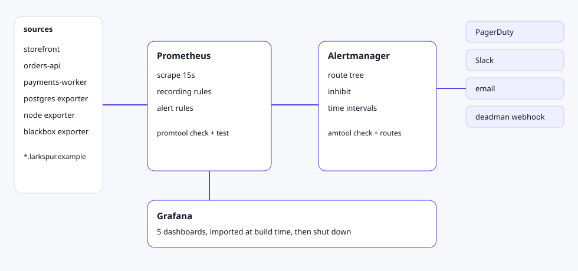
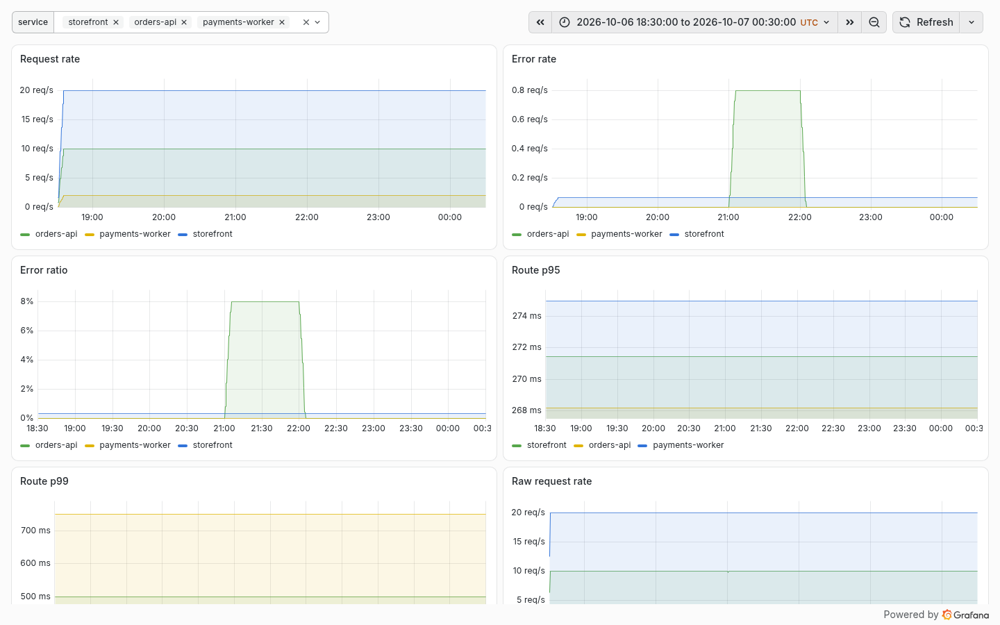
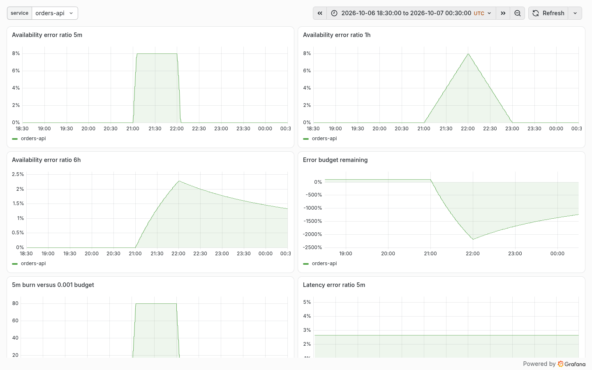
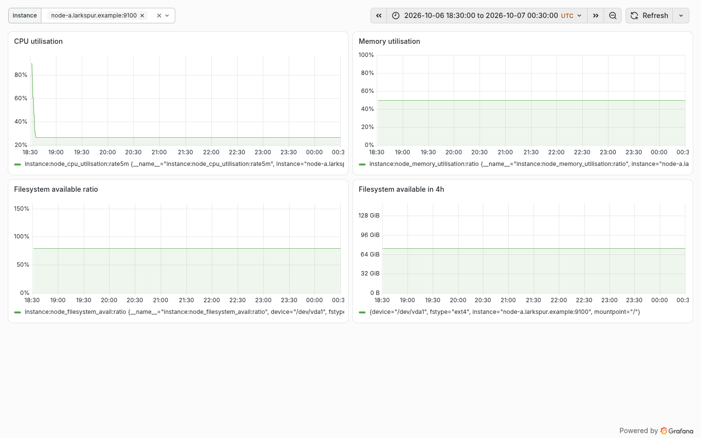
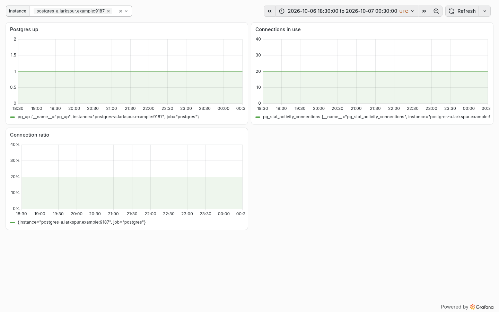
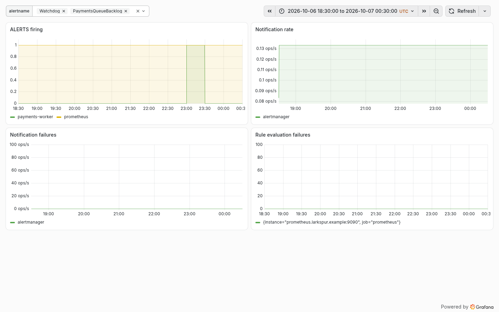
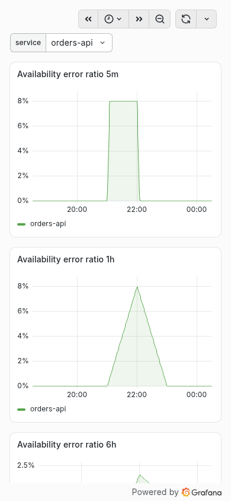
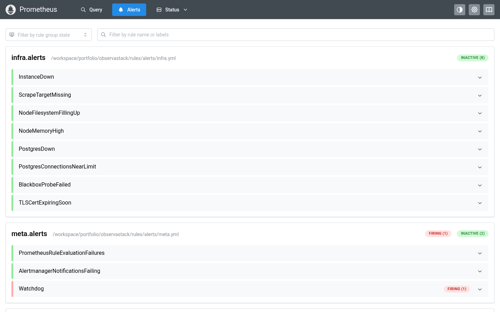
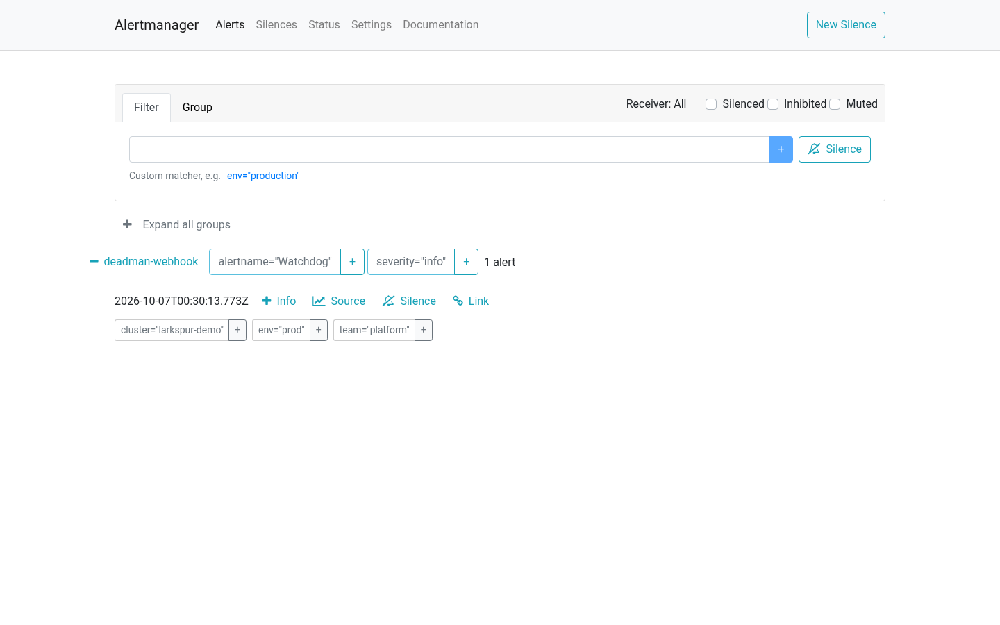

作品集演示 · 监控
ObservaStack
给虚构的生鲜零售商 Larkspur Grocers 写的 Prometheus、Alertmanager 和 Grafana 配置。规则有 promtool 单元测试，路由有 amtool 断言，仪表盘在构建机的 Grafana 上真实导入过。
Larkspur Grocers 是虚构的。这里没有客户、流量、事故或 MTTR。公开页面不运行这些进程。
构建时记录 recorded build-time · 2026-10-07T08:30:03+08:00
架构

配置真实且经过离线校验；公开页面没有运行这些进程。
和 PulseBoard 的区别
| 维度 | PulseBoard | ObservaStack |
|---|
| 引擎 | 自研 Python 和 SQLite | 真实的 Prometheus、Alertmanager、Grafana 配置 |
| 告警规则 | 3 条示例，未校验 | promtool check rules，并且 promtool test rules 覆盖每一条 |
| SLO | 一条 1 小时可用率规则 | 多窗口、多燃烧率（14.4 / 6 / 3 / 1）加录制规则，可用率和延迟两个 SLI |
| 路由 | 模拟通知日志 | 真实 alertmanager.yml，amtool check-config 和 routes test |
| 仪表盘 | 自绘页面，外加 1 份示例 JSON | 5 份可导入的 Grafana JSON，构建时真实导入并截图 |
| 规则 lint | 无 | pint 离线模式，外加策略测试 |
离线校验
卡片上的值来自 results/checks.json，标注为构建时记录。schemaVersion 39。
promtool
promtool, version 3.15.0 (branch: HEAD, revision: 5241a27fe3c6983549fccc32f6e65917408c63cd)
prometheus
prometheus, version 3.15.0 (branch: HEAD, revision: 5241a27fe3c6983549fccc32f6e65917408c63cd)
amtool
amtool, version 0.34.1 (branch: HEAD, revision: 73c6bfe7393929211294c1954f30d8ed78e4d0ad)
alertmanager
alertmanager, version 0.34.1 (branch: HEAD, revision: 73c6bfe7393929211294c1954f30d8ed78e4d0ad)
pint
0.89.0 (revision: 6a8eca9b3386f28d3566e6e90f070f156e1cd868)
grafana
grafana version 13.2.3
pytest
pytest 8.3.5
check config exit
0
check rules exit
0
rules found
38
unit tests passed
44
unit tests failed
0
unit tests exit
0
check metrics exit
0
check metrics problems
0
pint exit
0
pint bugs
0
pint warnings
0
amtool check-config exit
0
routes passed
9
routes failed
0
routes exit
0
dashboard expr exit
0
dashboard expr count
23
pytest passed
15
pytest failed
0
pytest exit
0
Grafana 导入
二进制版本 grafana version 13.2.3。每一份都是 POST /api/dashboards/import 的真实返回。
- larkspur-alerting: HTTP 200, imported true, panels 4/4
- larkspur-node: HTTP 200, imported true, panels 4/4
- larkspur-postgres: HTTP 200, imported true, panels 3/3
- larkspur-service-overview: HTTP 200, imported true, panels 6/6
- larkspur-slo: HTTP 200, imported true, panels 6/6
构建时监听
截图脚本启动 Alertmanager 时传入空的 --cluster.listen-address，关闭 9094 上的 gossip。三个进程就绪后，ss -ltnp 必须看到它们的监听套接字都在 127.0.0.1 上。ok true。地址 127.0.0.1:13000,127.0.0.1:19090,127.0.0.1:19093。套接字数 3。
仪表盘画廊
截图来自构建机本地 Grafana。曲线是 synth_openmetrics.py --seed 42 的合成序列，再经 promtool 回填录制规则。告警图上的 ALERTS 序列也是这个脚本生成的夹具，不是规则引擎的页面，除非文件名写明 API 里确实有 firing 告警。
 Desktop, service overview. 合成数据（seed 42），非生产遥测. Synthetic data (seed 42), not production telemetry. 构建时在构建机本地 Grafana 渲染。
Desktop, service overview. 合成数据（seed 42），非生产遥测. Synthetic data (seed 42), not production telemetry. 构建时在构建机本地 Grafana 渲染。

Service overview. 合成数据（seed 42），非生产遥测. Synthetic data (seed 42), not production telemetry. 构建时在构建机本地 Grafana 渲染。

SLO. 合成数据（seed 42），非生产遥测. Synthetic data (seed 42), not production telemetry. 构建时在构建机本地 Grafana 渲染。

Node USE. 合成数据（seed 42），非生产遥测. Synthetic data (seed 42), not production telemetry. 构建时在构建机本地 Grafana 渲染。

Postgres. 合成数据（seed 42），非生产遥测. Synthetic data (seed 42), not production telemetry. 构建时在构建机本地 Grafana 渲染。

Alerting fixture. 合成数据（seed 42），非生产遥测. Synthetic data (seed 42), not production telemetry. 构建时在构建机本地 Grafana 渲染。

SLO, mobile width. 合成数据（seed 42），非生产遥测. Synthetic data (seed 42), not production telemetry. 构建时在构建机本地 Grafana 渲染。

Prometheus alerts page, Watchdog was firing in the API. 合成数据（seed 42），非生产遥测. Synthetic data (seed 42), not production telemetry. 构建时在构建机本地 Grafana 渲染。

Alertmanager, Watchdog was listed by the API. 合成数据（seed 42），非生产遥测. Synthetic data (seed 42), not production telemetry. 构建时在构建机本地 Grafana 渲染。
下载